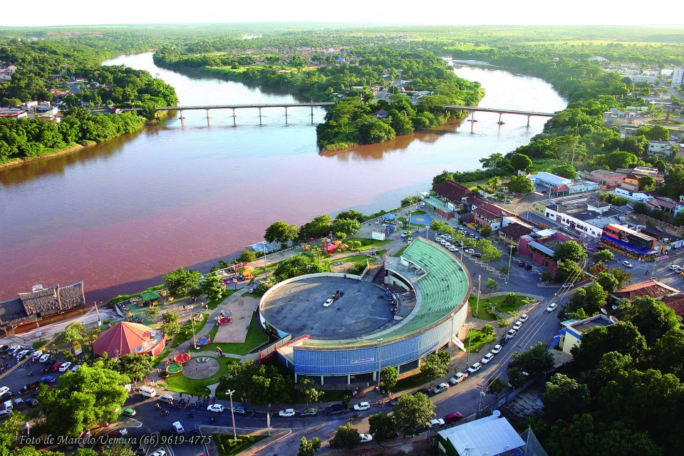

Conheça o lugar

O Porto do Baé é um dos principais pontos turísticos de Barra do Garças, no estado de Mato Grosso, sendo conhecido por sua bela paisagem às margens do Rio Araguaia e por sua grande importância cultural, turística e de lazer para a região. O local se tornou um dos espaços mais visitados da cidade, reunindo moradores e turistas em um ambiente que combina natureza, entretenimento, gastronomia e convivência social. Cercado pelas paisagens naturais do Vale do Araguaia, o Porto do Baé representa um dos cartões-postais mais famosos de Barra do Garças. Localizado próximo ao encontro dos rios Garças e Araguaia, o Porto do Baé oferece uma vista privilegiada das águas, das praias fluviais e das áreas naturais da região. O espaço é bastante procurado por visitantes que desejam aproveitar momentos de descanso, contemplar o pôr do sol e conhecer um dos ambientes turísticos mais importantes da cidade. Durante o fim da tarde, o reflexo do sol nas águas do rio cria paisagens muito admiradas por turistas e moradores. O complexo turístico do Porto do Baé possui estrutura voltada para lazer, cultura e entretenimento. O local conta com praça de alimentação, restaurantes, quiosques, áreas de convivência, espaço para caminhadas, eventos culturais e apresentações musicais. Muitas pessoas visitam o Porto do Baé para aproveitar a culinária regional, ouvir música ao vivo e conhecer melhor a cultura do Araguaia. Além da estrutura turística, o Porto do Baé também é utilizado para eventos tradicionais da cidade, festivais culturais, shows, competições esportivas e atividades recreativas. Durante algumas épocas do ano, principalmente nas temporadas de férias e nas festas regionais, o local recebe milhares de visitantes e se transforma em um dos principais centros de entretenimento de Barra do Garças.
Outro grande destaque do Porto do Baé são os passeios realizados no Rio Araguaia. O local funciona como ponto de partida para atividades náuticas, passeios de barco, jet ski e visitas às praias fluviais da região. Durante o período de seca, entre os meses de junho e setembro, surgem diversas praias de areia branca nas margens do rio, atraindo turistas de várias partes do Brasil em busca de lazer e contato com a natureza. As praias do Rio Araguaia próximas ao Porto do Baé são bastante procuradas por famílias, grupos de amigos e turistas que desejam aproveitar as águas calmas e as paisagens naturais da região. Muitas pessoas passam o dia nas praias fluviais aproveitando banhos, esportes aquáticos, pesca esportiva e momentos de descanso às margens do rio. O Porto do Baé também possui grande importância para a economia local, ajudando a movimentar o turismo, o comércio e os serviços da cidade. Restaurantes, vendedores ambulantes, artesãos e empreendedores da região utilizam o espaço como uma importante fonte de renda durante os períodos de maior movimento turístico. Dessa forma, o local contribui diretamente para o desenvolvimento econômico de Barra do Garças e do Vale do Araguaia. Além do turismo e lazer, o Porto do Baé é considerado um importante espaço de convivência social para moradores da cidade. Muitas pessoas frequentam o local para caminhar, praticar exercícios físicos, encontrar amigos e aproveitar o ambiente agradável próximo ao rio. Durante a noite, a iluminação do complexo e o movimento dos bares e restaurantes tornam o ambiente ainda mais atrativo para visitantes.
Além das atividades de ecoturismo, o parque também é bastante utilizado para práticas esportivas e aventuras ao ar livre, como trekking, corrida em trilhas, mountain bike, rapel e observação da natureza. Muitas trilhas possuem diferentes níveis de dificuldade, permitindo visitas tanto para iniciantes quanto para aventureiros mais experientes. A melhor época para visitar o Parque Estadual da Serra Azul costuma ser durante o período de seca, entre os meses de maio e setembro, quando as trilhas ficam mais acessíveis e o clima mais agradável para caminhadas e atividades ao ar livre. Durante esse período, as paisagens naturais da região ficam ainda mais bonitas e atraem um grande número de turistas. O Parque Estadual da Serra Azul representa um dos maiores símbolos do turismo ecológico de Barra do Garças e do estado de Mato Grosso. A combinação entre natureza preservada, cachoeiras, mirantes, trilhas, biodiversidade e mistérios faz com que o local seja considerado um dos destinos turísticos mais importantes da região Centro-Oeste do Brasil. Além de todas as atrações naturais e históricas, o Parque Estadual da Serra Azul possui localização de fácil acesso para visitantes que desejam conhecer um dos cenários mais impressionantes de Barra do Garças. Situado próximo à área urbana da cidade, o parque recebe turistas durante todo o ano e oferece uma experiência única de contato com a natureza, aventura e contemplação das paisagens do Cerrado brasileiro. Abaixo, é possível visualizar a localização do Parque Estadual da Serra Azul e entender melhor onde está situado esse importante patrimônio natural do estado de Mato Grosso.
As condições de acesso, funcionamento, valores e regras podem mudar. Confirme as informações com responsáveis ou órgãos locais antes de realizar o passeio.